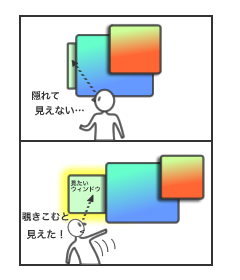

ウィンドウがいくつも重なったとき、以下のようなことで困ったことはないでしょうか。
こんなとき、ちらりウィンドウを用いることで、陰に隠れた物を覗きこむような動きによって、素早くウィンドウを探しスムーズに切り替えることができます。
例えばこんな風に使うと便利です。

現実世界では陰に隠れたものを見るとき、わざわざ手前にある物を動かさなくても自分の視点を少し動かすことで覗き見ることができます。
この視点移動をうまく使うことで、素早く柔軟にものを見分けることが可能になっています。
ところが現在のウィンドウシステムでは、自分の視点は固定されており、隠れたウィンドウを探すには手前にある物（ウィンドウ）をわざわざ手で動かすしかありません。
視点移動をウィンドウシステムにも採りいれることによってよりスムーズな作業ができるようになります。
その方法は単純で、アナログジョイスティックを動かすと、下の図のように手前のもの（ウィンドウ）ほど大きく動き、奥のもの（ウィンドウ）ほど小さく動きます。
このスピードの違いによって徐々にウィンドウの見えにずれが生じ、それまで隠れていたものが見えるようになります。
ChirariWindow.zip
マウス用ちらりウィンドウ もあります。
アナログジョイスティックをつないだあと、ChirariWindow.exeを起動してください。
あとはジョイスティックをぐりぐり。